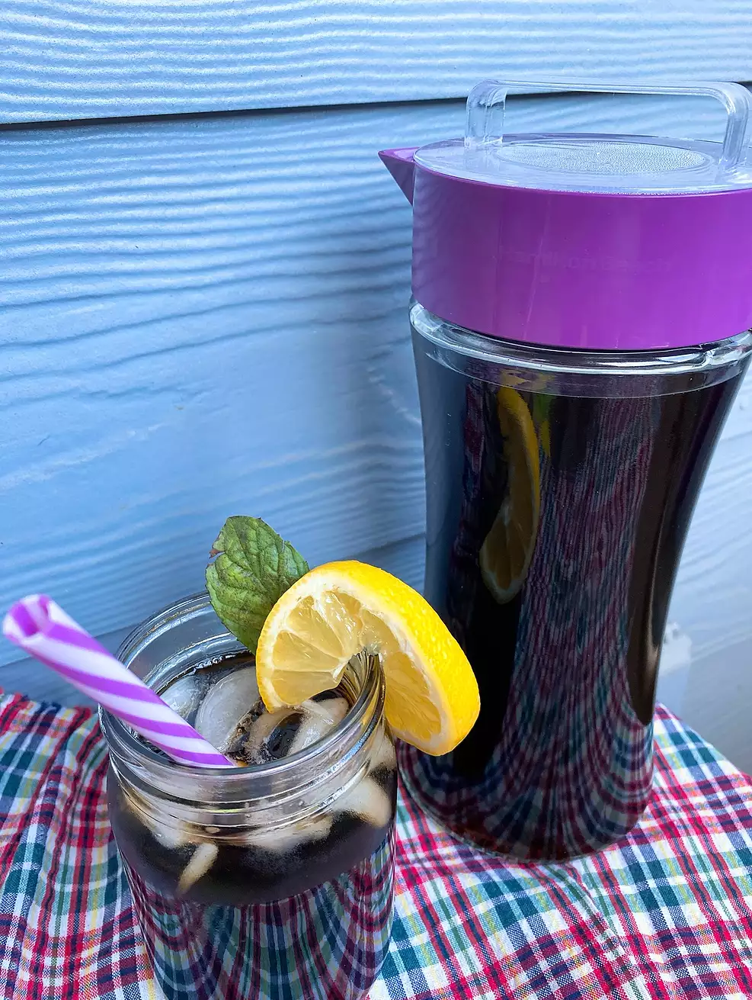

No one expects the INSTANT POT ICE TEA
back to home
Want Teh bing but your favourite stall uncle decides to take the day off? Want that mid-day sugar dose straight to your gut? Take iced tea to the next level by making it in your INSTANT POT

Description
The only tea recipe you need to flex on your British friends. The golden-yellow elixir of life is a powerful vitamin-C boost that gives you radiant, clear skin.
Ingredients
- 10 3/4 cups water, divided
- 1 cup white sugar
- 6 tea bags
- ice, that is iced
- 8 slices lemon sliced
- 8 sprigs fresh mint
Steps
- Pour 5 cups of water or one very big cup of water in your INSTANT POT. Add sugar and tea bags. Close and lock the lid. Select high pressure for 5 minutes and wait 10 minutes for the pressure to build up.
- Release pressure from the INSTANT POT for 15 minutes. Release remaining pressure for 5 minutes. Remove lid.
- Remove tea bags and squeeze remaining liquid into the pot. Pour tea into a pitcher and add the remaining water. Serve over ice with lemon slices and mint sprigs.
That's it! Your refreshing cup of iced tea!